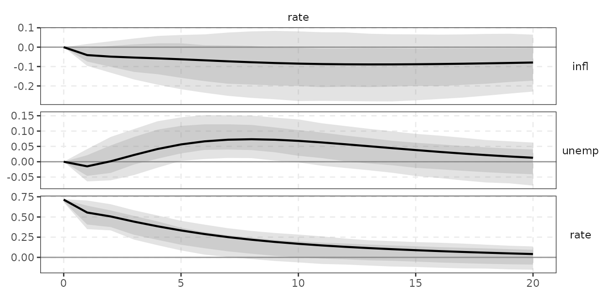
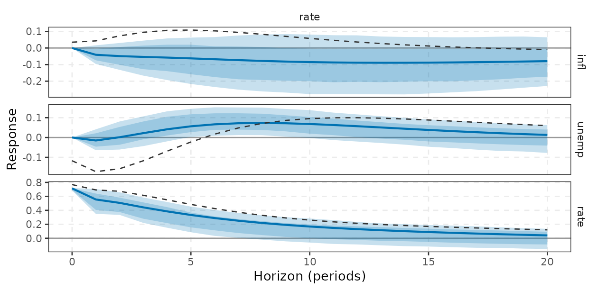
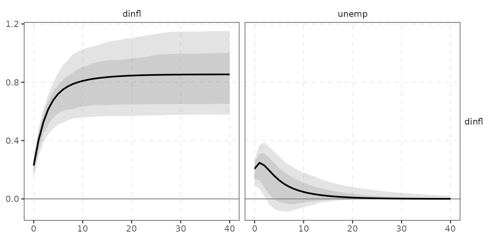
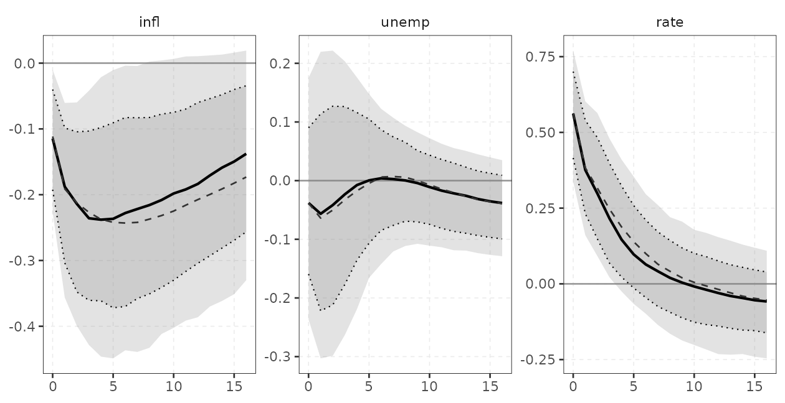
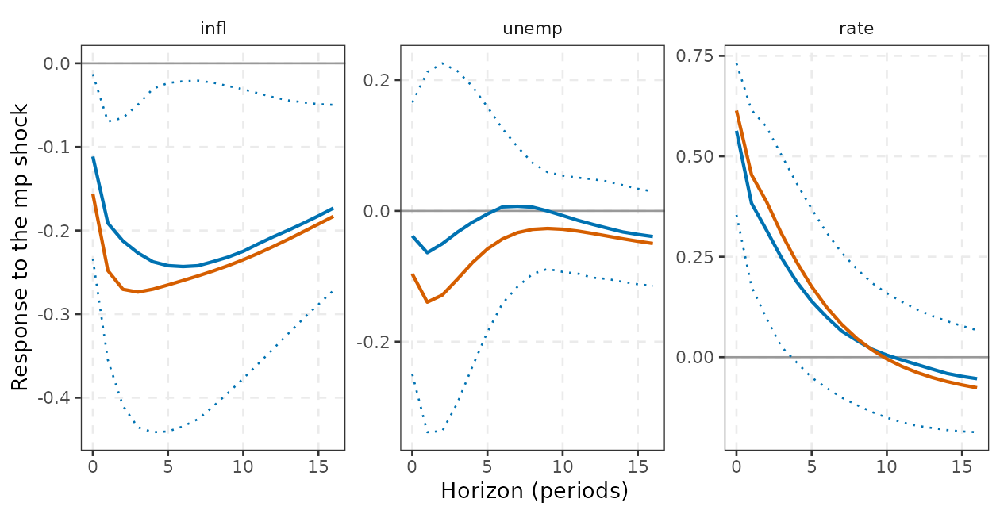
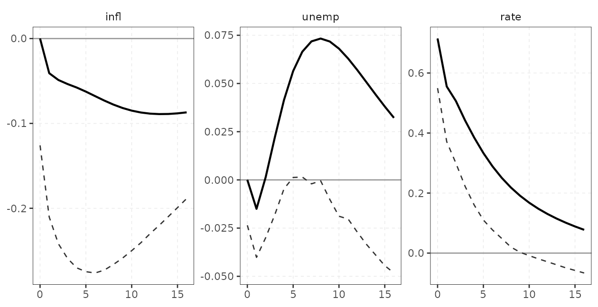
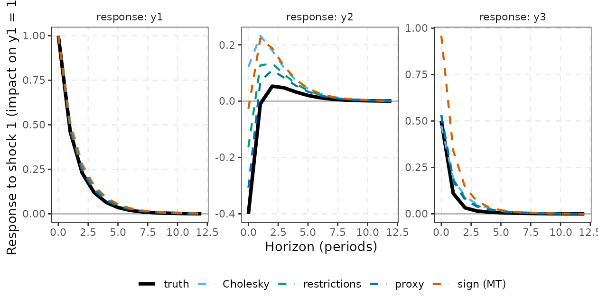
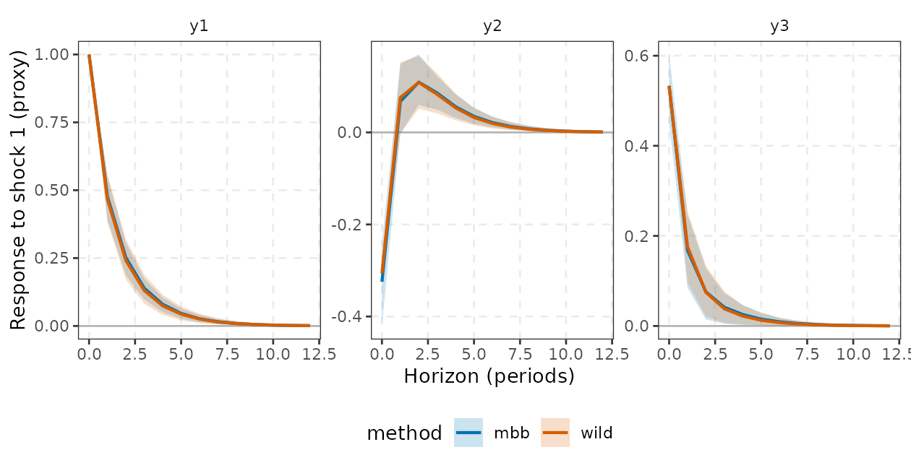

Structural identification: from Cholesky to proxies and sign restrictions
Source:vignettes/identification.Rmd
identification.Rmd1. The identification problem
The reduced-form VAR delivers innovations
with covariance
.
A structural VAR posits
with orthonormal shocks,
,
which requires
.
Any such
can be written
where
and
is an orthogonal matrix
().
The data pin down
,
hence
,
but say nothing about
:
there are
free parameters, and different
give observationally equivalent models with different impulse responses
.
An identification scheme is a set of assumptions that selects
(point identification) or restricts it to a set (set identification).
Each id_*() constructor in varm returns such a
scheme and is passed as the id argument of
irf(), fevd() and hd(), for both
varm (frequentist) and bvarm (Bayesian) fits.
Results are drawn with autoplot() (ggplot2) and tabulated
with tidy(), whose columns are response,
shock, horizon, estimate and,
when bands exist, level, conf.low,
conf.high.
| constructor | assumption | identification |
|---|---|---|
id_chol(order) |
recursive: lower triangular after ordering | point |
id_longrun() |
long-run multiplier lower triangular (Blanchard-Quah) | point |
id_restrictions(impact, longrun) |
arbitrary zero pattern on and/or (A-B / mixed) | point (just-identified) |
id_sign(restrictions, ...) |
signs of IRFs over some horizons | set |
id_zerosign(sign, zero, zero_lr, ...) |
zeros and signs (ARRW) | set (weights not implemented) |
id_proxy(z, fit) / proxy_draws()
|
external instrument for one shock | point, one shock |
id_hetero(fit, regime) |
two variance regimes (Rigobon) | point, statistical shocks |
id_given(P) |
user supplied impact matrix | point |
1.1 The A/B model, counting and observational equivalence
The general structural form (Amisano and Giannini, 1997; Luetkepohl,
2005, ch. 9) is
so that
and the impact matrix is
.
Three special cases cover most practice: the A-model
(,
so
,
structural shocks with unit variance after normalising the diagonal of
),
the B-model
(,
,
which is the form used by varm) and the AB-model.
has
distinct elements, while
has
,
so a necessary order condition is that the restrictions
supply at least
independent restrictions. For
that is three. The condition is not sufficient (Rubio-Ramirez, Waggoner
and Zha, 2010 give the exact rank condition for zeros):
is identified up to the sign of each column, i.e. up to the
matrices
with
diagonal
.
This sign indeterminacy is resolved by a normalisation, which
is a convention and not an identifying assumption, but it changes what
“a positive shock” means.
Observational equivalence. If
and
with
both satisfy
,
the likelihood, the forecasts and the reduced-form IRFs coincide; only
the structural IRFs
and the labels of the shocks differ. Identification restrictions are
therefore untestable in the just-identified case, and only
over-identifying restrictions leave a testable implication. In
varm, over-identification is rejected by
id_restrictions().
Pc <- t(chol(fit$Sigma)) # one admissible P
th <- 0.7; Q <- matrix(c(cos(th), sin(th), 0, -sin(th), cos(th), 0, 0, 0, 1), 3) # a rotation in the (1,2) plane
Pq <- Pc %*% Q
c(`PP' = Sigma for chol` = max(abs(Pc %*% t(Pc) - fit$Sigma)),
`PP' = Sigma for rotated` = max(abs(Pq %*% t(Pq) - fit$Sigma)))
#> PP' = Sigma for chol PP' = Sigma for rotated
#> 1.387779e-17 2.775558e-17
round(cbind(chol_col1 = Pc[, 1], rotated_col1 = Pq[, 1]), 3) # same fit, different "first shock"
#> chol_col1 rotated_col1
#> infl 0.308 0.235
#> unemp -0.012 0.205
#> rate 0.088 -0.106Both matrices reproduce to machine precision, yet they imply different first shocks. Everything that follows is a way of choosing (equivalently, ).
2. Cholesky (recursive) identification
Definition. Order the variables . Take (lower triangular, positive diagonal). Then shock affects variables on impact but not variables : variable responds contemporaneously only to shocks . The restriction is zeros in , which exactly identifies the model.
Economic story (monetary policy). Order
infl, unemp, rate (the column
order of yraw). The assumption is that prices and
unemployment are predetermined within the quarter with respect to
monetary policy (they are sticky and do not react to a policy surprise
in the same quarter), while the central bank sets the rate after seeing
current inflation and unemployment. The last shock is then the
monetary-policy shock. This is the classic recursive scheme of
Christiano, Eichenbaum and Evans (1999).
ir1 <- irf(fit, id = id_chol(), horizon = 20, ci = "wild", nboot = 300)
round(ir1$estimate[, , 1], 3) # impact matrix P (rows: response, columns: shock): lower triangular
#> shock
#> response infl unemp rate
#> infl 0.308 0.000 0.000
#> unemp -0.012 0.332 0.000
#> rate 0.088 -0.268 0.715
autoplot(ir1, shocks = rate)
A one-standard-deviation policy shock raises the rate by about 0.7 percentage points on impact. The path of inflation after the shock is the usual diagnostic: a significantly positive response (the “price puzzle”) signals that the recursive scheme or the information set is misspecified: the VAR does not contain what the central bank knows (for instance commodity prices or forecasts) and the “shock” is partly an anticipated reaction to inflation.
Ordering matters. Only the variable ordering, not
the choice of recursive
given an ordering, is a modelling decision. Moving rate
first says the policy rate is exogenous within the quarter, which is not
a monetary-policy shock at all. Comparing orderings is a cheap
robustness check:
ir2 <- irf(fit, id = id_chol(order = c(rate, infl, unemp)), horizon = 20, ci = "none")
round(ir2$estimate[, "rate", 1], 3) # impact responses to the "rate" shock when rate is ordered first
#> infl unemp rate
#> 0.035 -0.117 0.769
# ribbon and solid line: rate last; dashed: rate first
autoplot(ir1, shocks = rate) +
geom_line(data = subset(tidy(ir2), shock == "rate"), linetype = "dashed", colour = "grey20")
The residual correlation (cor(resid(fit))) tells you how
much the ordering can matter: with correlations near zero all orderings
agree. Here the rate and unemployment residuals have a correlation of
about
,
so the order matters for those two.
All orderings. With
there are six orderings. The response of inflation at
to the shock attached to the policy rate (the shock labelled
rate in the output, whichever position it takes in the
recursion) shows how much the answer depends on the assumption:
nm <- colnames(yraw)
perms <- list(c(1, 2, 3), c(1, 3, 2), c(2, 1, 3), c(2, 3, 1), c(3, 1, 2), c(3, 2, 1))
tab <- t(sapply(perms, function(o) {
e <- irf(fit, id = id_chol(order = all_of(nm[o])), horizon = 4, ci = "none")$estimate
c(rate_shock_on_inflation_h4 = e["infl", "rate", 5], rate_shock_on_rate_h0 = e["rate", "rate", 1])
}))
rownames(tab) <- sapply(perms, function(o) paste(substr(nm[o], 1, 3), collapse = ">"))
round(tab, 3)
#> rate_shock_on_inflation_h4 rate_shock_on_rate_h0
#> inf>une>rat -0.058 0.715
#> inf>rat>une 0.038 0.764
#> une>inf>rat -0.058 0.715
#> une>rat>inf 0.007 0.719
#> rat>inf>une 0.106 0.769
#> rat>une>inf 0.106 0.769Only orderings that put rate last give the
policy-shock interpretation of section 2; the others show the range of
what other timing assumptions would imply. Cholesky orderings are
observationally equivalent in fit, so the data cannot choose among
them.
Normalisation: one standard deviation vs unit shocks
With
shocks have unit variance, so responses are to a one-standard-deviation
shock. Policy discussions usually want a fixed size shock, such as 25
basis points.
irf(normalise = normalise_to(shock, variable, size))
rescales the shock so that the impact response of variable
equals size (draw by draw, so the bands reflect the
rescaling too).
irn <- irf(fit, horizon = 20, ci = "wild", nboot = 300,
normalise = normalise_to(rate, rate, 0.25))
round(irn$estimate["rate", "rate", 1], 3) # impact response is exactly 0.25
#> [1] 0.25
round(irn$estimate[, "rate", c(1, 5, 9, 13)], 3)
#> h
#> response 0 4 8 12
#> infl 0.00 -0.020 -0.027 -0.031
#> unemp 0.00 0.014 0.026 0.020
#> rate 0.25 0.135 0.076 0.046The normalisation changes only the scale of the responses for point identified schemes (all of them scale linearly), but for ratios across variables it avoids a classic pitfall: comparing responses in “standard-deviation units” across models whose shock variances differ.
3. Long-run restrictions (Blanchard-Quah)
Definition. Let
.
The long-run (cumulative) multiplier of the structural shocks is
Blanchard and Quah (1989) impose that
is lower triangular: shock
has no permanent effect on variables
.
varm computes
,
takes its Cholesky factor
,
and sets
.
The order of the variables is the column order of the data.
Economic story (supply and demand). In the original
application
,
the first shock is “supply” (the only shock with a permanent effect on
output) and the second is “demand” (transitory by assumption). Variables
must be stationary (growth rates or differences) for the long-run matrix
to be meaningful. yraw has no output series, so we
illustrate the mechanics with
:
the first shock is the only one that can permanently change the level of
inflation (a “nominal trend” shock) and the second is transitory for
inflation.
d2 <- data.frame(dinfl = diff(yraw$infl), unemp = yraw$unemp[-1])
f2 <- varm(d2, p = 2)
round(max(stability(f2)), 3)
#> [1] 0.851
ir_lr <- irf(f2, id = id_longrun(), horizon = 300, ci = "none")
round(apply(ir_lr$estimate, c(1, 2), sum), 3) # cumulated long-run matrix: upper-right entry is 0
#> shock
#> response dinfl unemp
#> dinfl 0.854 0.000
#> unemp -3.794 3.949Cumulative responses. The IRF of a differenced
variable is the response of its growth rate; the response of
its level is the running sum. cumulative = dinfl
cumulates that variable’s response over the horizon, for each draw,
before bands are computed:
ir_c <- irf(f2, id = id_longrun(), horizon = 40, ci = "wild", nboot = 300, cumulative = dinfl)
autoplot(ir_c, responses = dinfl) # level of inflation after the permanent (first) and the transitory shock
The level of inflation converges to a non-zero value after shock 1 (the long-run effect by construction) and returns to zero after shock 2 (restricted to zero, so the bands pinch near zero at long horizons).
I(1) caveats and weak-instrument-like behaviour. If the variables are I(1) and cointegrated, is singular and does not exist: model the cointegrating relations (not possible in this package) or difference the variables, accepting that over-differencing a stationary variable (or a cointegrated pair) corrupts the long-run restriction. With a VAR in levels of a near-integrated system is nearly singular, so tiny errors in are amplified in : the long-run multiplier behaves like a ratio with a near-zero denominator, as for a weak instrument. A small simulation (bivariate, true lower triangular with long-run effect of shock 1 on variable 2) shows the spread of the estimate rising with persistence :
set.seed(5)
bq_one <- function(rho, n = 200) {
Fm <- (1 - rho) * diag(2); L <- matrix(c(1, 0.5, 0, 1), 2); Pm <- Fm %*% L # Theta(1) = L, lower triangular
y <- matrix(0, n + 50, 2); for (t in 2:(n + 50)) y[t, ] <- rho * y[t - 1, ] + Pm %*% rnorm(2)
f <- varm(y[-(1:50), ], p = 1)
sum(irf(f, id = id_longrun(), horizon = 150, ci = "none")$estimate[2, 1, ]) # estimated long-run effect
}
sapply(c(`rho=0.5` = 0.5, `rho=0.9` = 0.9, `rho=0.97` = 0.97), function(r) { x <- replicate(100, bq_one(r)); c(mean = mean(x), sd = sd(x)) })
#> rho=0.5 rho=0.9 rho=0.97
#> mean 0.5189669 0.4147380 0.4252881
#> sd 0.2146527 0.4264377 0.6305603The true value is . The standard deviation grows markedly as (and the estimate acquires finite-sample bias), which is the Faust-Leeper (1997) and Christiano-Eichenbaum-Vigfusson (2006) warning in numbers.
Pitfalls.
- The restriction is on the long-run multiplier
,
which is poorly estimated when the VAR is near-integrated (Faust and
Leeper, 1997; Christiano, Eichenbaum and Vigfusson, 2006): small errors
in
become large errors in
.
Check bands; use bias correction (
bias_correct = TRUE) or a Bayesian VAR. - Whether a variable is modelled in levels or differences changes the identification: over-differencing a stationary variable distorts the restriction.
- The sign of each column is fixed by the Cholesky factor (positive long-run diagonal), not by economics. Flip signs if you want a “positive supply shock”.
4. Sign restrictions
Definition. Sign restrictions (Faust, 1998; Canova
and De Nicolo, 2002; Uhlig, 2005) use
and require the IRF of variable
to shock
to have sign
for
.
Zero entries mean unrestricted. The identified set is
The algorithm of Rubio-Ramírez,
Waggoner and Zha (2010) draws
from the Haar (uniform) distribution on the orthogonal group, using the
QR decomposition of a Gaussian matrix, and keeps the draw if every
column satisfies the restrictions (column sign flips are allowed). For
each reduced-form draw, nrot accepted rotations are
retained after up to maxtry attempts. In the returned
objects the shock dimension is labelled with the variable names whatever
the scheme, so with id_sign() index shocks by column
position (below: 1 = mp, 2 = demand, 3 = supply). The restrictions are a
matrix (rows: variables, columns: shocks) imposed over
horizon periods, or a
array. Exact zero restrictions on IRFs (as opposed to
unrestricted entries) are not available in id_sign();
combine them with signs in id_zerosign() (section 8).
Economic story. Three shocks distinguished by textbook New-Keynesian signs:
| shock | inflation | unemployment | interest rate |
|---|---|---|---|
| monetary-policy | unrestricted | ||
| demand | |||
| supply | unrestricted |
Each is imposed for the first four quarters (impact plus three). The restrictions separate demand from supply by the comovement of inflation and unemployment (a Phillips-curve sign) and the policy shock from demand by the response of inflation. Leaving the unemployment response to monetary policy unrestricted is the Uhlig (2005) “agnostic” approach: the response one most wants to learn about is not imposed.
S <- matrix(0, 3, 3, dimnames = list(colnames(yraw), c("mp", "demand", "supply")))
S["infl", ] <- c(-1, 1, 1)
S["unemp", ] <- c(0, -1, 1)
S["rate", ] <- c(1, 1, 0)
S
#> mp demand supply
#> infl -1 1 1
#> unemp 0 -1 1
#> rate 1 1 0
id_s <- id_sign(S, horizon = 4, nrot = 1, maxtry = 5000)Two sources of uncertainty
A set-identified model has two kinds of uncertainty that frequentist or Bayesian bands mix together:
- Estimation uncertainty about : the usual sampling or posterior variation.
- Identification uncertainty about within : the data cannot say, even in an infinite sample.
Pointwise percentile bands over rotations and reduced-form draws combine them, so wide bands cannot be read as “the data are uninformative”: part of the width is a consequence of the researcher’s choice to leave unrestricted within . Using many rotations at the point estimate isolates identification uncertainty:
# (a) identification uncertainty only: one reduced-form point, many rotations
ir_set <- irf(fit, id = id_sign(S, horizon = 4, nrot = 500, maxtry = 1e5), horizon = 16, ci = "none")
# (b) estimation uncertainty with one rotation per bootstrap draw (mixes both)
ir_mix <- irf(fit, id = id_s, horizon = 16, ci = "bootstrap", nboot = 500)
c(accept_rate_point = ir_set$accept_rate, accept_rate_boot = ir_mix$accept_rate)
#> accept_rate_point accept_rate_boot
#> 0.05397237 0.04778744
dim(ir_set$draws) # [response, shock, horizon, accepted rotations]
#> [1] 3 3 17 500
w <- function(ir, h) { # width of the 90% band, unemp response to shock 1 (mp)
d <- subset(tidy(ir), response == "unemp" & shock == "infl" & level == 0.9 & horizon == h)
d$conf.high - d$conf.low
}
round(rbind(`rotations only (at point estimate)` = sapply(c(0, 4, 8), w, ir = ir_set),
`bootstrap + rotations` = sapply(c(0, 4, 8), w, ir = ir_mix)), 3)
#> [,1] [,2] [,3]
#> rotations only (at point estimate) 0.415 0.428 0.170
#> bootstrap + rotations 0.412 0.395 0.205
# shock 1 (mp) is labelled "infl" in the output: shocks carry the variable names
autoplot(ir_mix, shocks = 1) +
geom_line(data = subset(tidy(ir_set), shock == "infl"), linetype = "dashed", colour = "grey20")
With a sample of 213 quarters and three variables, the width of the 90% band is almost entirely identification uncertainty: rotating at the point estimate gives bands about as wide as the full bootstrap (the two rows above, for horizons 0, 4 and 8). More data would shrink the second source of uncertainty but not the first.
The solid line and shaded bands are the bootstrap-plus-rotation result; the dashed line is the median of the rotations at the point estimate.
The median is not a model: Fry-Pagan
Pointwise medians across accepted rotations combine IRFs from
different rotations
:
the median response of unemployment to the “mp” shock may come from one
and the median response of inflation from another, so the median path is
not the IRF of any single structural model, and responses to different
shocks need not be orthogonal. Fry and Pagan (2011) propose the single
draw whose IRFs (all variables, shocks and horizons, standardised) are
closest to the pointwise median. irf_fry_pagan() extracts
the median-target (MT) rotation from the accepted IRFs stored in
draws:
mt <- irf_fry_pagan(ir_set)$irf # [response, shock, horizon] of the MT draw
mt <- data.frame(subset(tidy(ir_set, bands = FALSE), shock == "infl")[c("response", "horizon")],
estimate = as.vector(mt[, 1, ]))
ggplot(subset(tidy(ir_set), shock == "infl" & level == 0.9), aes(horizon, estimate)) +
geom_hline(yintercept = 0, colour = "grey60") +
geom_line(aes(y = conf.low), linetype = "dotted", colour = varm_palette(1)) +
geom_line(aes(y = conf.high), linetype = "dotted", colour = varm_palette(1)) +
geom_line(colour = varm_palette(1), linewidth = 0.8) +
geom_line(data = mt, colour = varm_palette(2)[2], linewidth = 0.8) +
facet_wrap(vars(response), scales = "free_y") +
labs(x = "Horizon (periods)", y = "Response to the mp shock") + theme_varm()
The orange line is a coherent structural model; the blue line
(pointwise median) and the dotted 90% limits summarise the set. Report
the MT model when you need one consistent decomposition (a historical
decomposition or a counterfactual). hd() with
id_sign() uses the first accepted rotation at the
point estimate, not the MT rotation, so treat a historical decomposition
from a sign identified model as an illustration of one admissible
model.
Pitfalls.
- The prior over is not uninformative about the IRFs: a uniform Haar prior on rotations implies informative priors on the impulse responses (Baumeister and Hamilton, 2015). With few binding restrictions the posterior is largely the prior.
-
accept_ratebelow a few percent signals that the restrictions are essentially in tension with the data (or too many). A zero acceptance rate stopsirf()with an error. - Restrictions that hold for many horizons are more informative; impact-only restrictions are the weakest.
- The identification is only as good as the cross-shock restrictions: without a sign pattern that separates the shocks from each other, the identified shocks are not uniquely labelled.
5. User-supplied impact matrix
id_given(P) accepts any matrix; it does not check
.
Use it to reproduce a published impact matrix, or to feed a rotation
computed elsewhere (for example from an external routine for zero and
sign restrictions).
6. Choosing a scheme and checking it
| question | cheap check |
|---|---|
| Is the Cholesky order innocuous? |
cor(resid(fit)); re-run with another
order; overlay a second tidy() on
autoplot()
|
| Is there a price puzzle? | Sign of the inflation response to the policy shock in the first year |
| Is the long-run restriction credible? | Width of bands at long horizons; compare to
bias_correct = TRUE
|
| Do sign restrictions bind? |
accept_rate; compare the identified-set width to the
bootstrap width |
| Is an FEVD interpretable? |
fevd() shares are only as good as the
identification |
7. Zero patterns on impact and long-run responses:
id_restrictions()
id_chol() and id_longrun() are two special
zero patterns. id_restrictions(impact, longrun) accepts any
matrices with 0 where the impact matrix
(or the long-run matrix
)
is restricted to zero and NA where it is free. Writing the
zeros as
for column
,
the shocks are processed in decreasing order of the number of zeros; the
-th
column
of the orthogonal matrix
is the unit vector in the null space of
(),
which exists when the zero counts are
(just-identified). Over-identified patterns are rejected. Each shock is
oriented deterministically: the impact response of variable
to shock
is positive (or, if that entry is restricted to zero, the first free
entry of the column).
Two consistency checks: the lower-triangular pattern reproduces
id_chol(), and a lower-triangular long-run pattern
reproduces id_longrun().
low <- matrix(NA, 3, 3); low[upper.tri(low)] <- 0
r1 <- irf(fit, id = id_restrictions(impact = low), horizon = 8, ci = "none")
r0 <- irf(fit, id = id_chol(), horizon = 8, ci = "none")
max(abs(r1$estimate - r0$estimate)) # same model
#> [1] 0
lo2 <- matrix(NA, 2, 2); lo2[1, 2] <- 0
r2 <- irf(f2, id = id_restrictions(longrun = lo2), horizon = 100, ci = "none")
max(abs(r2$estimate - irf(f2, id = id_longrun(), horizon = 100, ci = "none")$estimate))
#> [1] 5.551115e-17Mixed schemes are where it earns its keep. A non-recursive example: in the three-variable system suppose shock 3 moves only the rate on impact (two zeros) and shock 2 does not move the rate (one zero), with shock 1 unrestricted. This is not a permutation of a Cholesky scheme, because variables 1 and 2 respond to each other contemporaneously.
imp <- matrix(c(NA, NA, NA, NA, NA, 0, 0, 0, NA), 3, dimnames = list(colnames(yraw), paste0("shock", 1:3)))
imp
#> shock1 shock2 shock3
#> infl NA NA 0
#> unemp NA NA 0
#> rate NA 0 NA
ir_ab <- irf(fit, id = id_restrictions(impact = imp), horizon = 8, ci = "none")
round(ir_ab$estimate[, , 1], 3) # zeros hold to machine precision
#> shock
#> response infl unemp rate
#> infl 0.096 0.293 0.000
#> unemp -0.319 0.092 0.000
#> rate 0.282 0.000 0.715Pitfall. Zero restrictions are not testable when the model is just-identified, and an impact zero is a strong claim: it asserts no response within the period. With quarterly data, “no contemporaneous response” is a much stronger assumption than with monthly data.
8. Zero and sign restrictions: id_zerosign()
(ARRW)
Pure sign restrictions leave in a large set. Theory often supplies a few exact zeros as well (Arias, Rubio-Ramirez and Waggoner, 2018: ARRW). A zero restriction on the response of variable to shock at horizon reads , a linear constraint on .
Algorithm (id_zerosign(), following ARRW
Algorithm 2).
- Draw a reduced-form (bootstrap or posterior); set .
- Order shocks by decreasing number of zeros (feasible iff ).
- For : let ; draw uniformly on the unit sphere of the null space of (a Gaussian vector projected on the null space, then normalised).
- Form
,
flip the sign of each column if needed, and keep the draw if all sign
restrictions hold. Repeat until
nrotrotations are accepted ormaxtryis hit.
Zeros hold exactly by construction and .
Honest caveat: importance weights are not
implemented. ARRW show that the draws from this null-space
sampler are not uniform on the restricted set, and correct them
with a Jacobian weight (a ratio of determinants of
and of the volume elements
).
varm does not compute these weights, so accepted draws are
unweighted. The output is exact only (i) when there are no zero
restrictions (then the sampler is id_sign()), or (ii) when
the zeros pin the rotation down up to column signs (then the weights are
constant across rotations, although they still vary over reduced-form
draws). Under partial zero identification, treat bands as
approximate and compare with the pure-sign set.
Example. Make the monetary-policy shock (column 1, as in section 4) have zero impact effect on inflation and unemployment (a recursive-type assumption for that one shock only) while keeping the signs for the others. The impact sign for inflation is dropped for the policy shock since the zero replaces it.
S3 <- array(S, c(3, 3, 4), dimnames = c(dimnames(S), list(NULL)))
S3[1, 1, 1] <- 0 # impact inflation response of mp: zero, not a sign
Zm <- matrix(0, 3, 3); Zm[1, 1] <- 1; Zm[2, 1] <- 1 # zero impact on inflation and unemployment, shock 1
id_zs <- id_zerosign(sign = S3, zero = Zm, nrot = 300, maxtry = 1e5)
ir_zs <- irf(fit, id = id_zs, horizon = 16, ci = "none")
ir_zs$accept_rate
#> [1] 0.3792668
round(range(ir_zs$draws[1:2, 1, 1, ]), 12) # the two impact zeros (all accepted draws)
#> [1] 0 0
ir_s <- irf(fit, id = id_sign(S, horizon = 4, nrot = 300, maxtry = 1e5), horizon = 16, ci = "none")
# shock 1 (mp) is labelled "infl"; ribbon: zero+sign set, dashed: pure-sign median
autoplot(ir_zs, shocks = 1) +
geom_line(data = subset(tidy(ir_s), shock == "infl"), linetype = "dashed", colour = "grey20")
The solid line (with its ribbons) is the median of the zero-plus-sign
set and the dashed line the pure-sign median. Compare the two sets: the
zeros remove the rotations that violate them. Because the zero
restriction is not conjugate, the posterior mass within this set is the
approximate piece (above). For a fully-identified zero pattern,
id_restrictions() is exact.
Long-run zeros are available through zero_lr (a
0/1 matrix, 1 = cumulative response is zero), e.g. a demand
shock with no long-run effect on a level; the counting rule is the same,
and the same near-unit-root pitfalls as section 3 apply.
9. A data-generating process with known truth
To see which methods recover the truth we need a DGP whose structural impact matrix is known. Take , with unit-variance shocks and
The target is shock 1 (column 1 of
),
normalised to move
by one unit on impact. Features: (i)
has
,
so
responds contemporaneously to shock 2 and the recursive ordering
is wrong; (ii)
has three zeros
()
in a non-recursive pattern that id_restrictions() can
exploit; (iii) an instrument
is available.
P0 <- matrix(c(1, -0.4, 0.5, 0.6, 1, 0, 0, 0, 1), 3)
A1 <- matrix(c(0.5, 0.1, 0, 0.1, 0.4, 0.1, 0, 0.1, 0.3), 3)
simvar <- function(n, sdv = NULL, burn = 100) {
eps <- matrix(rnorm((n + burn) * 3), ncol = 3)
if (!is.null(sdv)) eps[burn + seq_len(n), ] <- eps[burn + seq_len(n), ] * sdv # sdv: n x 3 shock sd's
y <- matrix(0, n + burn, 3)
for (t in 2:(n + burn)) y[t, ] <- A1 %*% y[t - 1, ] + P0 %*% eps[t, ]
list(y = `colnames<-`(y[-seq_len(burn), ], c("y1", "y2", "y3")), eps = eps[-seq_len(burn), ])
}
truth <- function(H) { # response of (y1,y2,y3) to shock 1, y1 impact = 1
Ph <- diag(3); out <- matrix(0, 3, H + 1)
for (h in 0:H) { out[, h + 1] <- Ph %*% P0[, 1]; Ph <- A1 %*% Ph }
out / out[1, 1]
}
set.seed(7)
sm <- simvar(400)
fs <- varm(sm$y, p = 1)
tr <- truth(12)
round(tr[, 1:4], 2)
#> [,1] [,2] [,3] [,4]
#> [1,] 1.0 0.46 0.23 0.12
#> [2,] -0.4 -0.01 0.05 0.05
#> [3,] 0.5 0.11 0.03 0.01Now identify shock 1 four ways, from the same sample, and compare to the truth (black).
one <- normalise_to(y1, y1, 1) # impact on y1 = 1
z <- sm$eps[, 1] + rnorm(400, sd = 0.7) # strong instrument
Ssim <- matrix(0, 3, 3, dimnames = list(colnames(sm$y), paste0("s", 1:3))); Ssim[, 1] <- c(1, -1, 1)
ir_ch <- irf(fs, id = id_chol(), horizon = 12, ci = "none", normalise = one)
ir_ab <- irf(fs, id = id_restrictions(impact = imp), horizon = 12, ci = "none", normalise = one)
ir_px <- irf(fs, id = id_proxy(z, fs, target = y1, size = 1), horizon = 12, ci = "none")
ir_sg <- irf(fs, id = id_sign(Ssim, horizon = 1, nrot = 400, maxtry = 1e5), horizon = 12, ci = "none",
normalise = one)
td_sg <- tidy(ir_sg, bands = FALSE)
td_sg$estimate <- as.vector(irf_fry_pagan(ir_sg)$irf) # the median-target draw instead of the pointwise median
td_tr <- tidy(ir_ch, bands = FALSE) # same layout, filled with the truth
td_tr$estimate <- 0
td_tr$estimate[td_tr$shock == "y1"] <- as.vector(tr) # shock-1 truth, ordered response within horizon
stacked <- do.call(rbind, Map(function(d, m) cbind(d[d$shock == "y1", ], method = m),
list(td_tr, tidy(ir_ch, bands = FALSE), tidy(ir_ab, bands = FALSE), tidy(ir_px, bands = FALSE), td_sg),
c("truth", "Cholesky", "restrictions", "proxy", "sign (MT)")))
stacked$method <- factor(stacked$method, c("truth", "Cholesky", "restrictions", "proxy", "sign (MT)"))
ggplot(stacked, aes(horizon, estimate, colour = method, linetype = method, linewidth = method)) +
geom_hline(yintercept = 0, colour = "grey70") +
geom_line() +
scale_colour_manual(values = c("black", varm_palette(5)[c(5, 3, 1, 2)]), name = NULL) +
scale_linetype_manual(values = c("solid", rep("dashed", 4)), name = NULL) +
scale_linewidth_manual(values = c(1.4, rep(0.8, 4)), name = NULL) +
facet_wrap(vars(response), scales = "free_y", labeller = label_both) +
labs(x = "Horizon (periods)", y = "Response to shock 1 (impact on y1 = 1)") + theme_varm()
Cholesky is biased because its ordering assumption is false; the zero-restriction scheme (which encodes the true pattern) and the proxy track the truth. The sign-identified median target model lies within the identified set but is not guaranteed to be close: signs alone are weak. Impact errors across one hundred samples quantify this:
set.seed(11)
mc <- t(replicate(100, {
s <- simvar(300); f <- varm(s$y, p = 1); zz <- s$eps[, 1] + rnorm(300, sd = 0.7)
c(chol = irf(f, id = id_chol(), horizon = 1, ci = "none", normalise = one)$estimate["y2", "y1", 1],
restr = irf(f, id = id_restrictions(impact = imp), horizon = 1, ci = "none", normalise = one)$estimate["y2", "y1", 1],
proxy = irf(f, id = id_proxy(zz, f, target = y1), horizon = 1, ci = "none")$estimate["y2", "y1", 1])
}))
rbind(mean = colMeans(mc), sd = apply(mc, 2, sd), rmse = sqrt(colMeans((mc + 0.4)^2))) # truth: impact of shock 1 on y2 = -0.4
#> chol restr proxy
#> mean 0.14332574 -0.4292148 -0.40800481
#> sd 0.05725749 0.2125344 0.09789596
#> rmse 0.54630440 0.2134776 0.09773361The Cholesky mean misses (a bias that does not vanish with ), whereas the other two are centred on it. The proxy is the most precise here because the instrument is strong (reliability about 0.7); the zero scheme is correct but noisier, since the three zeros identify the direction of shock 1 only through the estimated . A weak instrument would reverse the ranking (see below).
10. External instruments (proxy SVAR)
Set-up. Let be a scalar external instrument for shock and write with the impact vector. Mertens and Ravn (2013) and Stock and Watson (2018) require
- relevance: ;
- exogeneity (contemporaneous): for .
Then
,
so
,
identified up to scale. id_proxy() estimates
and scales it so that variable target moves by
size on impact,
;
the IRF is
.
Only column shock of the IRF array (default: the position
of target) is identified: the other columns are zero, so
FEVD of other shocks is meaningless, and the FEVD of
the proxy shock is only right if size equals the shock
standard deviation, which a proxy cannot deliver.
Relevance. The first stage is the regression of the
target residual on
.
proxy_fstat() reports F (classical),
F_robust (HC1) and F_hac, the Montiel Olea,
Stock and Watson (2021) Wald statistic that accounts for estimation of
the VAR coefficients and serial correlation; F_hac is what
matters for the robust intervals. Rules of thumb: below about 10 the
normalised IRF
is a ratio with a denominator near zero: it has fat tails, is not
normal, and bootstrap percentile bands undercover.
z_weak <- 0.08 * sm$eps[, 1] + rnorm(400) # nearly irrelevant instrument
rbind(strong = proxy_fstat(fs, z, "y1"), weak = proxy_fstat(fs, z_weak, "y1"))
#> F F_robust F_hac
#> strong 433.2734693 390.9114603 186.2869674
#> weak 0.2847472 0.2635655 0.2361444Inference.
irf(fit, id_proxy(z, fit), ci = ...) redraws
but holds
fixed, so it understates uncertainty; use
proxy_draws(), which carries one
per draw. It offers two bootstraps:
-
"wild": a common Rademacher weight multiplies . Since , exactly: the key moment is not resampled at all, and varies only through the re-estimated VAR coefficients. This is why Jentsch and Lunsford (2019, 2022) show the wild bootstrap is invalid for proxy SVARs, with bands far too narrow. -
"mbb"(default): moving-block bootstrap of the pairs , which preserves their joint serial dependence and does resample the moment ; valid under strong instruments. The block length defaults to the Jentsch-Lunsford rule , the same rule asvarm_proxy().
In the package’s Monte Carlo
(validation/proxy-coverage.R and
validation/ident-extra.R, not run here) the nominal 90%
band for the impact response of a non-target variable covered the truth
only 13.5% of the time with a strong instrument and 21% with a weak one
(and 15% in ident-extra.R) under the wild bootstrap, versus
87% for the moving-block bootstrap with a strong instrument. Band widths
on one simulated sample show the same thing:
pb_w <- proxy_draws(fs, z, nboot = 300, type = "wild", target = y1)
pb_m <- proxy_draws(fs, z, nboot = 300, type = "mbb", target = y1)
ir_w <- irf(pb_w$draws, pb_w$id, horizon = 12)
ir_m <- irf(pb_m$draws, pb_m$id, horizon = 12)
both <- rbind(cbind(tidy(ir_m), method = "mbb"), cbind(tidy(ir_w), method = "wild"))
both <- subset(both, shock == "y1" & level == 0.9)
both$width <- both$conf.high - both$conf.low
round(with(subset(both, response == "y2" & horizon %in% c(0, 2, 4)), tapply(width, list(method, horizon), c)), 3) # 90% width, y2
#> 0 2 4
#> mbb 0.181 0.109 0.052
#> wild 0.022 0.114 0.058
subset(both, response == "y2" & horizon == 0)[c("method", "conf.low", "conf.high")] # truth: -0.4
#> method conf.low conf.high
#> 2 mbb -0.4205651 -0.2400096
#> 236 wild -0.3161437 -0.2940591
ggplot(both, aes(horizon, estimate, colour = method, fill = method)) +
geom_hline(yintercept = 0, colour = "grey70") +
geom_ribbon(aes(ymin = conf.low, ymax = conf.high), alpha = 0.2, colour = NA) +
geom_line(linewidth = 0.8) +
scale_colour_manual(values = varm_palette(2)) + scale_fill_manual(values = varm_palette(2)) +
facet_wrap(vars(response), scales = "free_y") +
labs(x = "Horizon (periods)", y = "Response to shock 1 (proxy)") + theme_varm()
At impact, where the normalisation divides by
and the key moment matters, the wild-bootstrap band is roughly an order
of magnitude narrower than the block-bootstrap band and here excludes
the true value
(table and intervals above). At later horizons the two widths are close,
because the re-estimated VAR coefficients dominate. The same results are
available in one call with
varm_proxy(fit, m, method = "mbb"), which also reports the
shock series and the instrument reliability.
vp <- varm_proxy(fs, m = z, target = "y1", horizon = 8, nboot = 200)
vp
#> <varm_proxy> shock to y1 (size 1), horizon 0..8, 200 moving-block-bootstrap draws (block length 22)
#> first-stage F = 433.3; robust F = 390.9
#> instrument reliability: 0.657
round(vp$estimate[1:3, ], 3)
#> y1 y2 y3
#> 0 1.000 -0.307 0.533
#> 1 0.467 0.072 0.176
#> 2 0.242 0.110 0.074Weak-instrument-robust sets.
varm_proxy_robust() implements the Montiel Olea, Stock and
Watson (2021) Anderson-Rubin-type confidence sets. For each response
it inverts the HAC Wald test of
;
the set is one of a bounded interval, the complement of an interval,
empty, or the whole real line. With a strong instrument it is a
normal-looking interval; with a weak one the honest answer is “the data
cannot tell”: the set is unbounded.
rb_s <- varm_proxy_robust(fs, m = z, target = "y1", horizon = 4, level = 0.90)
rb_w <- varm_proxy_robust(fs, m = z_weak, target = "y1", horizon = 4, level = 0.90)
rbind(strong = c(rb_s$lower[1, "y2", 1], rb_s$upper[1, "y2", 1], rb_s$case[1, "y2", 1]),
weak = c(rb_w$lower[1, "y2", 1], rb_w$upper[1, "y2", 1], rb_w$case[1, "y2", 1])) # lower, upper, case (1 bounded, 2 complement, 4 real line)
#> [,1] [,2] [,3]
#> strong -0.4091685 -0.2099833 1
#> weak -Inf Inf 4(The columns are the 90% lower limit, upper limit and set type for the impact response of ; the truth is .)
Pitfalls. (i) The proxy must be uncorrelated with
all other structural shocks, not merely with the policy rule;
high-frequency surprises can contain an information effect. (ii) If the
proxy sample is shorter than the VAR, missing values must be 0-filled
only when the instrument is truly zero there; NAs are rejected. (iii) A
single instrument identifies one shock; with
instruments varm_proxy(target = c(...)) identifies
shocks up to a Cholesky-type restriction within the target block, so the
order of target matters. (iv)
varm_proxy_bayes() gives a posterior alternative (see its
help).
10.1 Full-posterior and robust-Bayes proxy-SVARs
varm_proxy_bayes() is limited-information: the proxy
never touches
and nothing restricts the shock. Two functions add the missing
machinery, both built on a [bvarm()] fit (so the reduced-form prior is
whatever you chose, e.g. Minnesota) and on a first-stage regression of
the proxy,
,
with a Jeffreys prior. Writing
and
,
the proxy covariances are
,
so exogeneity
(
uncorrelated with the first
shocks) is a set of linear restrictions on the columns of
.
Convention: the r proxies are correlated with the
last r shocks.
-
varm_proxy_arw()/id_proxy_bayes()(Arias, Rubio-Ramirez and Waggoner 2021 type): exact independent posterior draws, adding sign restrictions on the proxy shocks, a reliability truncation, and lags of and in the proxy equation. With one proxy the shock is point-identified; with several, exogeneity leaves an orthogonal rotation of the proxy shocks that only signs pin down. The draws plug intoirf(). -
varm_proxy_gkr()(Giacomini, Kitagawa and Read 2022): for set-identified shocks, instead of one arbitrary prior on the unrevisable rotation, report the set of posterior means and the robust credible region over all priors on the admissible rotations (GKR Algorithm 2, with draws of instead of a numerical optimiser).
bf <- bvarm(sm$y, p = 1, ndraw = 400, nburn = 200)
arw <- varm_proxy_arw(bf, z, target = "y1", horizon = 8)
round(rbind(truth = tr[, 1], posterior_median = arw$estimate[1, ], lo90 = arw$bands[1, , 1], hi90 = arw$bands[1, , 4]), 2)
#> y1 y2 y3
#> truth 1 -0.40 0.50
#> posterior_median 1 -0.31 0.53
#> lo90 1 -0.43 0.43
#> hi90 1 -0.21 0.63
ir_arw <- irf(bf, id_proxy_bayes(bf, z, target = "y1"), horizon = 8) # same draws through irf()The same DGP in the robust-Bayes setting. In the GKR ordering the true shock 2 (’s second column, ) is one of the two non-proxy shocks, which exogeneity alone cannot tell apart. With the sign restriction “shock 1 raises and on impact” its impact response is only set-identified:
S <- matrix(0, 3, 3); S[1:2, 1] <- 1
gk <- varm_proxy_gkr(bf, z, signs = S, shock = 1, horizon = 4, nq = 100)
rbind(set_of_means_lower = gk$lower[1, ], set_of_means_upper = gk$upper[1, ],
robust_90_lo = gk$region[1, , 1], robust_90_hi = gk$region[1, , 4],
single_prior_median = gk$estimate[1, ])
#> y1 y2 y3
#> set_of_means_lower 1.599107e-02 8.549768e-02 -1.0057139
#> set_of_means_upper 5.374786e-01 9.499538e-01 0.5700843
#> robust_90_lo 2.971019e-05 1.490977e-06 -1.0703288
#> robust_90_hi 5.928206e-01 9.981810e-01 0.7096259
#> single_prior_median 4.474327e-01 8.189190e-01 -0.3899005
gk$prob_nonempty
#> [1] 1The two non-proxy shocks are only identified up to a rotation in the
2-dimensional space orthogonal to the proxy direction, so the set of
means is wide, whereas the single-prior (Haar) posterior reports one
narrower number that depends on the prior. GKR recommend reporting both.
The true shock 2,
,
satisfies the signs but sits at the upper edge of the identified set (it
is nearly the most extreme admissible rotation), so its
impact (1) lies slightly above the estimated set of means; the 90%
robust region extends to it on
and nearly on
.
Averaging bounds over draws and approximating the set by random
rotations both err on the narrow side at such boundary points. The
approximation of the identified set by random rotations underestimates
it at each draw and converges as nq grows; strong proxies
are assumed (GKR sec. 3).
What is not implemented. Caldara and Herbst’s (2019) Metropolis-within-Gibbs sampler with a structural measurement equation and priors on ; the ARW structural-prior importance weights (volume element); and GKR’s constrained-optimiser Algorithm 1.
11. Identification through heteroskedasticity
If the covariance changes across two known regimes,
and
with
distinct, then
is identified (Rigobon, 2003) up to column order and sign, without any
economic restriction. With
,
take the eigendecomposition
and set
.
id_hetero(fit, regime) implements it with shocks ordered by
decreasing
(relative variance in regime 2) and signs set so that
.
It returns an id_given() object with the eigenvalues as
attribute lambda.
set.seed(21)
nn <- 600; reg <- rep(0:1, each = nn / 2)
sdv <- cbind(ifelse(reg == 1, 2, 1), 1, ifelse(reg == 1, 0.5, 1)) # variance ratios 4, 1, 0.25
sh <- simvar(nn, sdv = sdv)
fh <- varm(sh$y, p = 1)
idh <- id_hetero(fh, regime = reg)
round(attr(idh, "lambda"), 2) # true: 4, 1, 0.25
#> [1] 4.00 0.84 0.23
round(cbind(true = P0[, 1] / P0[1, 1], est = idh$P[, 1] / idh$P[1, 1]), 2) # shock 1, y1 impact = 1
#> true est
#> y1 1.0 1.00
#> y2 -0.4 -0.39
#> y3 0.5 0.50The estimated and the first column recover the truth up to sampling error. Limits to keep in mind:
- This is a point estimate only:
idhis anid_given()with a fixed , soirf(fit, idh, ci = "bootstrap")resamples but not and understates uncertainty. - Identification needs distinct ; near-equal ratios mean a near-singular eigenproblem and unstable columns (a weak-identification problem).
- The regimes must be known (or estimated elsewhere) and constant across them.
- Shocks are statistical, ordered by volatility change; labelling them economically is a separate, untested step.
12. Why sign-identified bands are not like other bands, and a labelling pitfall
Sign restrictions share two pitfalls worth stating in one place.
Shocks are indexed by position, not by name. The
shock dimension of the returned IRF array carries the variable
names (colnames(yraw)) whatever the scheme. With
id_sign()/id_zerosign()/id_restrictions()
shock
is column
of the restriction matrix, so label the shocks yourself
("mp", "demand", "supply" in
section 4) and index by position. Dimnames of the restriction matrix are
ignored by irf().
Bands mix model and identification uncertainty.
Pointwise percentile bands over (reduced-form draws
rotations) combine estimation uncertainty with the width of the
identified set. Extra data narrows only the first. A defensible
report shows both: the set at the point estimate (many rotations,
ci = "none") and the full band, as in section 4, together
with the Fry-Pagan model:
fp <- irf_fry_pagan(ir_set) # ir_set: rotations at the point estimate (section 4)
fp$index; fp$varm_draw # which accepted draw; which reduced-form draw it came from
#> [1] 77
#> [1] 1
round(fp$impact, 3) # its impact matrix (response x shock)
#> shock
#> response infl unemp rate
#> infl -0.156 0.192 0.183
#> unemp -0.096 -0.265 0.176
#> rate 0.614 0.331 0.323irf_fry_pagan() returns a coherent structural model (an
IRF array, its impact matrix, and the indexes of the draw), unlike the
pointwise median, so shocks from it can be used for historical
decompositions and counterfactuals. It depends on the prior over
rotations and is a summary of the set, not an estimate.
13. Which identification for which question?
| shock | typical question | credible identifications in varm
|
main threat |
|---|---|---|---|
| Monetary policy | effect of a rate surprise on inflation and unemployment |
id_proxy() with high-frequency or narrative surprises
(best when an instrument exists); id_chol() with policy
last in a rich system; id_sign()/id_zerosign()
with price-puzzle-avoiding signs |
information effects and weak instruments (proxy); omitted forward-looking variables (Cholesky, price puzzle); prior-driven bands (signs) |
| Fiscal | multiplier of a spending or tax change |
id_chol() with government spending ordered first
(Blanchard-Perotti-style timing, no discretionary response within the
quarter); id_proxy() with narrative tax or spending news;
id_restrictions() with an external elasticity in
|
anticipation (fiscal foresight makes the VAR non-invertible); timing assumptions at low frequency |
| Oil | effect of oil price changes on activity and inflation |
id_sign()/id_zerosign() separating supply,
aggregate demand and oil-specific demand by comovements;
id_proxy() with oil-supply news; id_chol()
with oil first |
composition (the demand origin of oil price changes); sign-set width; labelled shocks are not unique |
| Technology | effect of a productivity shock on hours and output |
id_longrun() / id_restrictions(longrun = )
(Gali, Blanchard-Quah); id_proxy() with
utilisation-adjusted TFP |
near-unit-root persistence (poor long-run estimate), over-differencing, level vs. difference specification |
| No economic prior, volatility shifts | statistical shocks, then labelled | id_hetero() |
weak identification, regimes must be known, point estimate only |
General guidance. (1) If you have a plausible instrument,
prefer id_proxy(); it needs the weakest assumptions about
the rest of the system but gives only one shock. (2) Use signs when
theory speaks only about co-movement, and report the identified set and
the Fry-Pagan model. (3) Add exact zeros (id_zerosign(),
id_restrictions()) only for things you would defend as
exact. (4) Check robustness across schemes: if the answer is
the same under Cholesky, signs and a proxy, the identification is not
doing the work.
References
- Amisano, G. and Giannini, C. (1997). Topics in Structural VAR Econometrics, 2nd ed. Springer.
- Arias, J. E., Rubio-Ramirez, J. F. and Waggoner, D. F. (2021). Inference in Bayesian proxy-SVARs. Journal of Econometrics, 225(1), 88-106.
- Arias, J. E., Rubio-Ramirez, J. F. and Waggoner, D. F. (2018). Inference based on structural vector autoregressions identified with sign and zero restrictions: theory and applications. Econometrica, 86(2), 685-720.
- Baumeister, C. and Hamilton, J. D. (2015). Sign restrictions, structural vector autoregressions, and useful prior information. Econometrica, 83(5), 1963-1999.
- Blanchard, O. J. and Quah, D. (1989). The dynamic effects of aggregate demand and supply disturbances. American Economic Review, 79(4), 655-673.
- Canova, F. and De Nicolo, G. (2002). Monetary disturbances matter for business fluctuations in the G-7. Journal of Monetary Economics, 49(6), 1131-1159.
- Christiano, L. J., Eichenbaum, M. and Evans, C. L. (1999). Monetary policy shocks: what have we learned and to what end? In Handbook of Macroeconomics, vol. 1A.
- Christiano, L. J., Eichenbaum, M. and Vigfusson, R. (2006). Assessing structural VARs. NBER Macroeconomics Annual, 21, 1-72.
- Faust, J. (1998). The robustness of identified VAR conclusions about money. Carnegie-Rochester Conference Series on Public Policy, 49, 207-244.
- Faust, J. and Leeper, E. M. (1997). When do long-run identifying restrictions give reliable results? Journal of Business & Economic Statistics, 15(3), 345-353.
- Fry, R. and Pagan, A. (2011). Sign restrictions in structural vector autoregressions: a critical review. Journal of Economic Literature, 49(4), 938-960.
- Caldara, D. and Herbst, E. (2019). Monetary policy, real activity, and credit spreads: evidence from Bayesian proxy SVARs. AEJ: Macroeconomics, 11(1), 157-192.
- Giacomini, R., Kitagawa, T. and Read, M. (2022). Robust Bayesian inference in proxy SVARs. Journal of Econometrics, 228(1), 107-126.
- Gertler, M. and Karadi, P. (2015). Monetary policy surprises, credit costs, and economic activity. American Economic Journal: Macroeconomics, 7(1), 44-76.
- Jentsch, C. and Lunsford, K. G. (2019). The dynamic effects of personal and corporate income tax changes in the United States: comment. American Economic Review, 109(7), 2655-2678.
- Jentsch, C. and Lunsford, K. G. (2022). Asymptotically valid bootstrap inference for proxy SVARs. Journal of Business & Economic Statistics, 40(4), 1876-1891.
- Luetkepohl, H. (2005). New Introduction to Multiple Time Series Analysis. Springer.
- Mertens, K. and Ravn, M. O. (2013). The dynamic effects of personal and corporate income tax changes in the United States. American Economic Review, 103(4), 1212-1247.
- Montiel Olea, J. L., Stock, J. H. and Watson, M. W. (2021). Inference in structural vector autoregressions identified with an external instrument. Journal of Econometrics, 225(1), 74-87.
- Rigobon, R. (2003). Identification through heteroskedasticity. Review of Economics and Statistics, 85(4), 777-792.
- Stock, J. H. and Watson, M. W. (2018). Identification and estimation of dynamic causal effects in macroeconomics using external instruments. Economic Journal, 128(610), 917-948.
- Rubio-Ramírez, J. F., Waggoner, D. F. and Zha, T. (2010). Structural vector autoregressions: theory of identification and algorithms for inference. Review of Economic Studies, 77(2), 665-696.
- Sims, C. A. (1980). Macroeconomics and reality. Econometrica, 48(1), 1-48.
- Uhlig, H. (2005). What are the effects of monetary policy on output? Results from an agnostic identification procedure. Journal of Monetary Economics, 52(2), 381-419.